Runtime configuration
Contenu
Runtime configuration¶
Important
If you read this section, this means you succeed to start MORPHEE main instance. If not, please go back to previous section.
Dashboard¶
Main Dashboard can be modified in the Bench configuration. By default, it displays the different slots, the climatic chamber information, The climatic chamber sharing configuration and the Energy system sharing configuration.
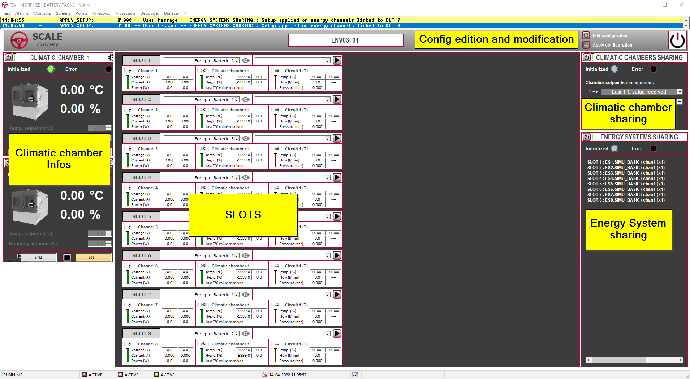
Slots configuration¶
You can modify the configuration by pushing the ‘Edit configuration’ button.
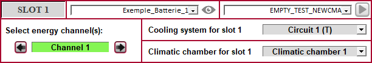
It will display all the Slot and you will be able to modify each slot configuration.
Channel affectation¶
You can select the channels you want to affect to the Slot.
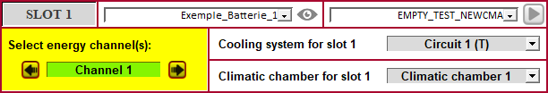
By default, each slot has its own channel;
Slot |
Electric Channel |
|---|---|
Slot 1 |
Channel 1 |
Slot 2 |
Channel 2 |
Slot 3 |
Channel 3 |
Slot 4 |
Channel 4 |
Slot 5 |
Channel 5 |
… |
… |
Slot X |
Channel X |
But if ENERGY_SYSTEM Component allows it, we can use several channels for one slot;
Slot |
Electric Channel |
|---|---|
Slot 1 |
Channel 1 + Channel 2 |
Slot 2 |
No more available |
Slot 3 |
Channel 3 + Channel 4 + Channel 5 |
Slot 4 |
No more available |
Slot 5 |
No more available |
… |
… |
Slot X |
Channel X |
etc…
You can modify the configuration by clicking in on the right and left button:
No channel |
One channel |
Two channels (if possible) |
|---|---|---|
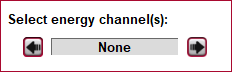 |
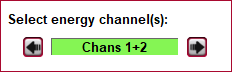 |
|
Caution
If a channel is used by a slot, it is not anymore available for the next slot.
Climatic chamber selection¶
When you have affected a channel, you can precise if the slot is in a climatic chamber, and if yes, in which one;
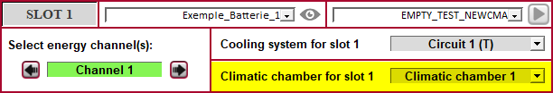
The list of Climatic chamber depends on the configuration:
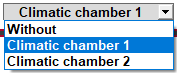
Cooling system selection¶
If battery is using a cooling system, it can also be defined here;
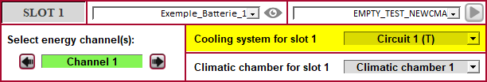
The list of Coolant conditionning circuit appears in the list:
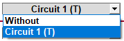
Climatic chamber sharing¶
As it is possible to have several slots inside the same climatic chamber, it is necessary to describe how the system will react if different setpoint arrives in the master;
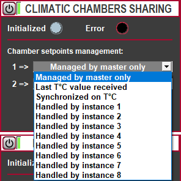
The possibilities are:
Selection |
Description |
|---|---|
Managed by master only |
The temperature setpoint is managed by the master. Every test from instances, even if sending a setpoint, will not be taken into account |
Last T°C value received |
The last temperature received will be applied, wherever and whenever it arrives. |
Synchronized on T°C |
Wait that all runing instances send the same setpoint to apply it. All the test on the different instances will be on hold as long as setpoint is not applyed. |
Handled by instance X |
Only setpoint coming from Instance X will be applied. |
Energy System sharing¶
The Energy System Sharing window will display actual configuration with available slots:
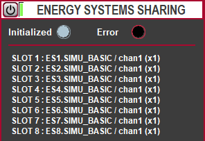
For every Energy System used in the configuration, it will display:
Name of the component
Number of channels in this component